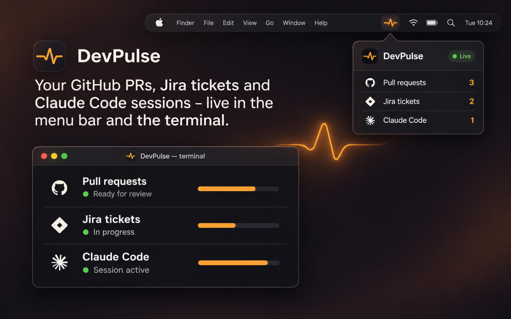

DevPulse
Vaše PR na GitHubu, tikety v Jiře a Claude Code sessions — živě v menu baru i v terminálu.

Co umí
Jeden přehled na dvou místech
Vaše pull requesty, žádosti o review, tikety z Jiry a běžící sessions Claude
Code v okénku v menu baru a tatáž data živě v terminálu: příkaz
devpulse je ukáže ve stylu lazygitu. Každou položku otevřete jedním
kliknutím nebo klávesou.
Notifikace, na kterých záleží
Žádost o review, nový komentář, CI prošlo nebo spadlo, Claude Code čeká na vás nebo dodělal práci. Každý druh si zapnete či vypnete; vaše vlastní komentáře a boti, kteří vás nezajímají, mlčí.
Rychlé hledání
Stiskněte ⌥Space a napište samotné číslo, třeba
2290: najde se v pull requestech, tiketech i sessions. Nebo napište
gh 812 či jira 2290 a Enter: pull request nebo tiket se
otevře v prohlížeči.
Skoro nic nespotřebuje
Jeden dotaz na GitHub za obnovení, žádný časovač pro sessions Claude Code, pauza, když Mac spí, a terminál, který překresluje jen to, co se změnilo.
Stáhnout
Obraz disku je podepsaný a notarizovaný Applem, takže se otevře bez bezpečnostních varování. Přetáhněte DevPulse do složky Aplikace.
Sestavení ze zdrojů
Potřebujete Xcode a toolchain Rustu; projekt Xcode není potřeba.
git clone https://github.com/jiripisa/devpulse.git
cd devpulse
./run.sh